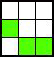
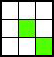
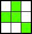
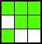

~ Fraktale Welten ~
The Game of life by John Horton Conway
Das Spiel des Lebens (englisch Conway’s Game of Life) ist ein vom Mathematiker John Horton Conway 1970 entworfenes Spiel, basierend auf einem zweidimensionalen, zellulären Automaten. Es ist eine einfache und bis heute populäre Umsetzung der Automaten-Theorie von Stanisław Marcin Ulam.
Das Spielfeld ist in Zeilen und Spalten unterteilt und theoretisch unendlich groß. Jedes Gitterquadrat ist ein zellulärer Automat (Zelle), der einen von zwei Zuständen einnehmen kann, welche oft als lebend und tot bezeichnet werden. Zunächst wird eine Anfangsgeneration von lebenden Zellen auf dem Spielfeld platziert. Jede lebende oder tote Zelle hat auf diesem Spielfeld genau acht Nachbarzellen, die berücksichtigt werden (Moore-Nachbarschaft). Der im nächsten Schritt (Generation) vorliegende Zustand jeder Zelle ergibt sich anhand einfacher Regeln aus den Zuständen ihrer Nachbarzellen.
Die Folgegeneration wird für alle Zellen gleichzeitig berechnet und ersetzt die aktuelle Generation. Der Zustand einer Zelle (lebendig oder tot) in der Folgegeneration hängt nur vom aktuellen Zustand der Zelle selbst und den aktuellen Zuständen ihrer acht Nachbarzellen ab.
Die von Conway zu Anfang verwendeten Regeln sind (lebende Zellen grün dargestellt) ➽
Eine tote Zelle mit genau drei lebenden Nachbarn wird in der Folgegeneration „geboren“ (zum Leben erweckt). Hier hat die mittlere (tote) Zelle genau drei lebende Nachbarn und wird in der nächsten Generation leben:
Eine lebende Zelle mit weniger als zwei lebenden Nachbarn stirbt in der Folgegeneration (an Einsamkeit). Hier hat die mittlere Zelle nur einen lebenden Nachbarn und wird in der nächsten Generation tot sein. Ob die Zelle rechts unten ebenfalls stirbt, hängt von ihren weiteren Nachbarn ab.
Eine lebende Zelle mit zwei oder drei lebenden Nachbarn bleibt in der Folgegeneration am Leben. Hier hat die mittlere Zelle genau drei lebende Nachbarn und wird in der nächsten Generation weiterhin leben. ab.
Eine lebende Zelle mit mehr als drei lebenden Nachbarn stirbt in der Folgegeneration (an Überbevölkerung). Hier hat die mittlere Zelle fünf lebende Nachbarn und wird in der nächsten Generation tot sein. Dasselbe gilt für die mittlere Zelle der oberen Reihe, sie hat mindestens vier lebende Nachbarn. Die tote linke Zelle der mittleren Reihe hat auch mindestens vier lebende Nachbarn und wird daher in der nächsten Generation tot bleiben.
Mit diesen vier einfachen Regeln kann aus gegebenen Anfangsmustern im Laufe des Spiels eine Vielfalt komplexer Strukturen wachsen. Es gibt statische Strukturen, die sich von einer zur nächsten Generation nicht ändern, andere oszillieren, indem sie nach einer endlichen Anzahl Generationen wieder vorliegen, wieder andere wachsen oder vergehen. Manche Strukturen, sogenannte Raumschiffe, bewegen sich orthogonal oder diagonal auf dem Spielfeld fort, indem sie aufgrund der Regeln verschobene Kopien von sich selbst erzeugen.
. . . weiterlesen . . .Ein anderes Muster: